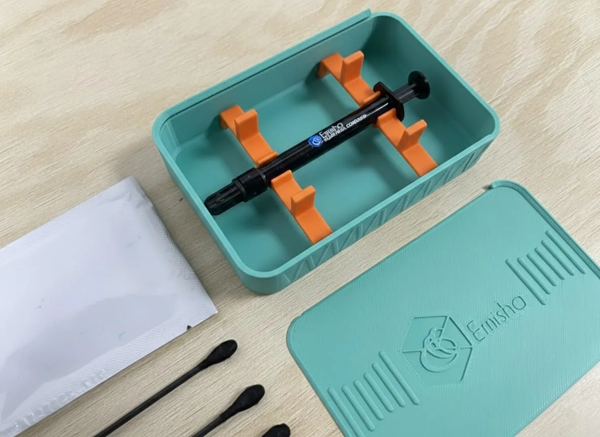

Cómo aplicar metal líquido en una PS5 sin arruinarla
· Guía
Tu PS5 calienta más que antes y el ventilador se oye desde el otro cuarto. Cambiar la interfaz térmica del APU por metal líquido baja temperaturas de verdad. También es de las pocas modificaciones que te pueden dejar la consola muerta si te saltas dos reglas. Aquí van esas dos reglas y el procedimiento completo.

Por qué el APU de la PS5 trabaja tan caliente
La PS5 trae CPU y GPU en un solo encapsulado, el APU, y lo pone a carga alta durante horas seguidas. Todo ese calor sale por un solo camino. Del silicio pasa a la tapa metálica del APU, de ahí a la base del disipador y al final al aire que mueve el ventilador. Entre el APU y el disipador va la interfaz térmica, y ese es el eslabón débil. Es el punto donde dos superficies metálicas, por bien maquinadas que estén, no se tocan de verdad.
El compuesto que trae de fábrica cumple, pero envejece. Con cada ciclo de calentar y enfriar se reseca y se corre hacia los bordes, y quedan zonas sin contacto completo. Casi nunca empieza con un apagón. Primero el ventilador sube de revoluciones antes de lo que subía. Después las temperaturas se van más arriba en sesiones largas. En consolas muy castigadas ya se siente la caída de rendimiento, porque el sistema se protege bajando frecuencias.
Qué gana la consola con metal líquido
Una pasta térmica normal, de silicona con carga cerámica, anda entre 3 y 12 W/m·K. El metal líquido de Emisha Liquid Ultra es una aleación de galio e indio, líquida a temperatura ambiente, y conduce alrededor de 38 W/m·K. Varias veces más. En la consola eso se ve como un núcleo más frío bajo carga sostenida y un ventilador que no tiene que trabajar tan duro para mantener la misma temperatura.
A cambio hay que tenerle respeto. No puede tocar aluminio y conduce electricidad. Además no perdona que le pongas de más. Si eso te queda claro, el trabajo se hace en casa sin problema. Si algo de ahí te deja dudando, mejor no lo hagas tú.
Regla 1: solo cobre o niquelado
Antes de abrir la jeringa, fíjate de qué está hecha la superficie del disipador que se va a apoyar sobre el APU. Si es cobre o está niquelada, adelante. Si es aluminio desnudo, ahí párale y usa una pasta térmica convencional. No hay truco casero ni barrera que vuelva segura esa combinación. La amalgama que forma el galio no se limpia, se lleva el metal consigo.
Lo mismo va para la herramienta y los recipientes. Nada de espátulas, pinzas, charolas ni tapas de aluminio cerca del producto. Usa plástico, acero inoxidable o los aplicadores que vienen en el estuche.
Regla 2: es conductor eléctrico
Alrededor del APU hay componentes de montaje superficial a milímetros de distancia. Una gota que se escurra para allá puede cerrar un circuito que no debía cerrarse y dejarte la placa dañada de forma permanente. Por eso aquí no se cubre generoso como con pasta térmica. Lo que buscas es una película apenas visible, sin nada acumulado en los bordes de la tapa. Antes de dosificar, tapa el perímetro del socket con cinta o con una barrera de plástico.
Cuánto material se usa
Una aplicación en el APU de una PS5 se lleva más o menos 0.3 gramos. Es bastante menos de lo que uno se imagina. La presentación de 1 g ($399 MXN) da para unas tres aplicaciones, que es lo normal para uso personal. Las de 5 g ($1,399 MXN) y 10 g ($1,999 MXN) salen mejor si haces mantenimiento en volumen y te importa el costo por aplicación.
El procedimiento paso a paso
- Trabaja con la consola desconectada y fría. Quita la corriente y todos los cables, y deja pasar unos minutos. Ten lista una superficie limpia, buena luz y algo donde poner los tornillos.
- Verifica el material del disipador. Cobre o niquelado, sigue. Aluminio desnudo, cierra todo y usa pasta convencional.
- Retira toda la interfaz anterior. Limpia la tapa del APU y la base del disipador con alcohol isopropílico hasta que queden secas, brillantes y sin nada de residuo. Un resto de pasta vieja arruina el contacto.
- Protege el entorno del socket. Cubre los componentes de alrededor. Esa barrera es la que te salva si algo se escurre.
- Dosifica una gota mínima. Como 0.3 g. Si dudas, empieza con menos. Agregar siempre puedes; quitar casi nunca es fácil.
- Extiende con el aplicador de punta suave. Reparte hasta cubrir el área con una película pareja y apenas perceptible. No debe quedar producto juntado en ningún borde.
- Monta el disipador sin arrastrar. Baja el conjunto derecho, sin deslizarlo, y aprieta los tornillos en cruz con la presión que indica el fabricante.
- Cierra y haz una prueba de carga. Arma la consola, ponla a trabajar un rato con algo pesado y compara cómo se oye el ventilador contra lo que tenías antes.
Si se escurre
Sobre superficies que no son porosas el material se recoge con un aplicador o un hisopo. Por su tensión superficial tiende a juntarse en una sola gota, y eso ayuda. El residuo que queda se limpia con alcohol isopropílico. Nunca uses utensilios ni recipientes de aluminio para limpiar, ni siquiera para recoger el sobrante. Los residuos se desechan conforme a la normativa local de residuos metálicos, no por el drenaje ni con la basura orgánica.
Un detalle de clima. Por debajo de 15.7 °C la aleación solidifica y se expande alrededor de 0.3 %. Si guardaste la jeringa en un lugar frío, déjala llegar a temperatura ambiente antes de aplicar.
Cuándo mejor no lo hagas
- Si tu consola sigue en garantía. Abrirla la invalida. Si el equipo está cubierto, el camino es el fabricante.
- Si no te sientes cómodo desarmando. Una PS5 lleva cables planos y conectores delicados. Si abrir un equipo te pone nervioso, este no es el proyecto para estrenarte.
- Si el disipador es de aluminio. Ya lo dijimos dos veces. Va la tercera.
- Si andas con prisa. El error típico no es técnico, es de apuro. Poner de más, montar chueco o cerrar sin revisar el perímetro.
Si prefieres no hacerlo tú, llévalo con alguien que trabaje el material a diario. En el taller hacemos el cambio de interfaz térmica y la revisión previa no tiene ningún costo. Escríbenos por WhatsApp al +52 55 7563 9255 y con gusto te atendemos.
Metal líquido con estuche completo
Manejamos el estuche con jeringa dosificada, aplicadores, espátula y toallita de limpieza. Presentaciones de 1 g, 2 g, 5 g y 10 g, en existencia aquí en la CDMX.